CODING AGENTS AS PIXEL WORLD MODELS
traex/GPT-6.1-Sol · 0182
点击播放 · 原生 RGB 像素
逐轮保存的候选
回放视频、检查图与代码变化。
每份候选均可单独播放。实际图片检查记录在下方工具轨迹中。
候选 01播放与检查图
点击播放 · 原生 RGB 像素
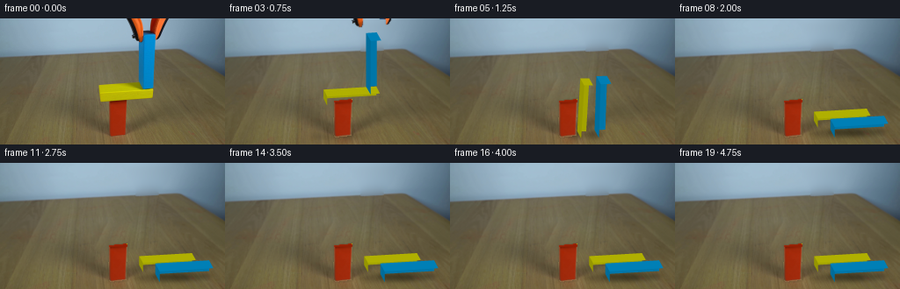
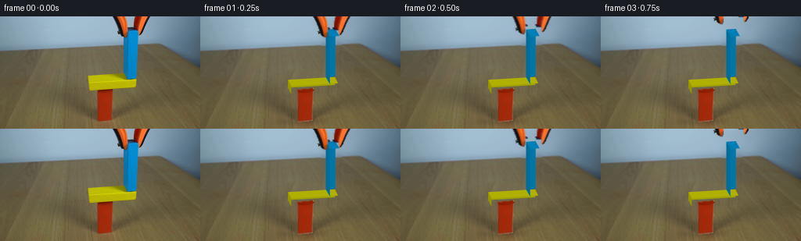
展开代码变化
--- 上一保存版本
+++ 本次保存版本
@@ -0,0 +1,236 @@
+"""Image-grounded, analytic RGB continuation of the balance demonstration."""
+from pathlib import Path
+import math
+import numpy as np
+import cv2
+from PIL import Image
+from scipy.sparse import lil_matrix
+from scipy.sparse.linalg import spsolve
+import artifact_io
+
+ROOT=Path(__file__).resolve().parent
+W,H=256,144
+S=4
+
+def clean_background(im):
+ Y,X=np.mgrid[:H,:W]
+ mask=np.zeros((H,W),np.uint8)
+ polys=[[[141,0],[195,0],[182,29],[157,30],[145,8]],
+ [[156,13],[179,13],[177,84],[156,84]],
+ [[109,71],[171,68],[179,78],[177,95],[110,98],[106,88]]]
+ for p in polys: cv2.fillPoly(mask,[np.array(p)],255)
+ mask=cv2.dilate(mask,np.ones((5,5),np.uint8))
+ cv2.fillPoly(mask,[np.array([[121,91],[146,90],[146,135],[123,138],[120,134]])],255)
+ x=(X-160)/100.;y=(Y-20)/60.
+ D=np.stack([np.ones_like(x),x,y,x*x,x*y,y*y,x**3,x*x*y,x*y*y,y**3],-1)
+ wall=(Y < 42-.031*X)&(X>70)&(X<229)&(mask==0)
+ fit=np.empty(im.shape,float)
+ for c in range(3):fit[:,:,c]=D@np.linalg.lstsq(D[wall],im[:,:,c][wall],rcond=None)[0]
+ sx=np.maximum(0,X-80);sy=np.clip(np.rint(Y+3.1).astype(int),0,H-1)
+ src=im[sy,sx].astype(float)
+ src[Y < 43.8-.038*X-1]=fit[Y < 43.8-.038*X-1]
+ ys,xs=np.where(mask);n=len(xs);inds=np.full((H,W),-1,int);inds[ys,xs]=np.arange(n)
+ A=lil_matrix((n,n));rhs=np.zeros((n,3))
+ for i,(yy,xx) in enumerate(zip(ys,xs)):
+ degree=0
+ for dx,dy in [(1,0),(-1,0),(0,1),(0,-1)]:
+ nx,ny=xx+dx,yy+dy
+ if not(0<=nx<W and 0<=ny<H):continue
+ degree+=1
+ if mask[ny,nx]:A[i,inds[ny,nx]]=-1
+ else:rhs[i]+=im[ny,nx]
+ rhs[i]+=src[yy,xx]-src[ny,nx]
+ A[i,i]=degree
+ bg=im.astype(float);bg[ys,xs]=spsolve(A.tocsr(),rhs)
+ return np.uint8(np.clip(bg,0,255))
+
+# Small impulse-based planar rigid-body solver, using explicit convex polygons.
+class Body:
+ def __init__(self,x,y,w,h,m,static=False):
+ self.p=np.array([x,y],float);self.v=np.zeros(2);self.a=0.;self.av=0.
+ self.w=w;self.h=h;self.inv=0 if static else 1/m
+ self.ii=0 if static else 12/(m*(w*w+h*h))
+ def verts(self):
+ c,s=math.cos(self.a),math.sin(self.a)
+ return np.array([[-self.w/2,-self.h/2],[self.w/2,-self.h/2],[self.w/2,self.h/2],[-self.w/2,self.h/2]])@np.array([[c,s],[-s,c]])+self.p
+
+def cross(a,b):return a[0]*b[1]-a[1]*b[0]
+def clip(poly,n,d):
+ out=[]
+ for k,q in enumerate(poly):
+ p=poly[k-1];dp=p@n-d;dq=q@n-d
+ if (dp<=0)!=(dq<=0):out.append(p+(q-p)*dp/(dp-dq))
+ if dq<=0:out.append(q)
+ return np.array(out)
+def contact(a,b):
+ va,vb=a.verts(),b.verts();best=1e9;normal=None
+ for poly in [va,vb]:
+ for i in range(2):
+ edge=poly[(i+1)%4]-poly[i];n=np.array([-edge[1],edge[0]]);n/=np.linalg.norm(n)
+ pa,pb=va@n,vb@n;overlap=min(pa.max(),pb.max())-max(pa.min(),pb.min())
+ if overlap<-.02:return None
+ if overlap<best:best=overlap;normal=n
+ if (b.p-a.p)@normal<0:normal=-normal
+ inter=va
+ for i in range(4):
+ edge=vb[(i+1)%4]-vb[i];n=np.array([edge[1],-edge[0]])
+ inter=clip(inter,n,vb[i]@n+.025)
+ if not len(inter):return None
+ tang=np.array([-normal[1],normal[0]]);inds=np.argsort(inter@tang)
+ pts=[inter[inds[0]],inter[inds[-1]]]
+ if np.linalg.norm(pts[0]-pts[1])<1:pts=pts[:1]
+ return normal,max(best,0),pts
+
+def dynamics():
+ red=Body(134,20,18,40,8,True)
+ yellow=Body(144,45,60,10,3)
+ blue=Body(169,80.5,12,61,3.66)
+ floor=Body(134,-50,1000,100,1,True)
+ bodies=[yellow,blue]
+ pairs=[(yellow,red),(blue,red),(yellow,floor),(blue,floor),(yellow,blue)]
+ dt=.001;states=[]
+ for i in range(3501):
+ states.append([(b.p.copy(),float(b.a)) for b in bodies])
+ for b in bodies:b.v[1]-=650*dt;b.p+=b.v*dt;b.a+=b.av*dt
+ contacts=[]
+ for a,b in pairs:
+ co=contact(a,b)
+ if co:contacts.append((a,b,*co))
+ for it in range(10):
+ for a,b,n,pen,pts in contacts:
+ for p in pts:
+ ra=p-a.p;rb=p-b.p
+ vel=lambda o,r:o.v+o.av*np.array([-r[1],r[0]])
+ vrel=vel(b,rb)-vel(a,ra);vn=vrel@n
+ den=a.inv+b.inv+cross(ra,n)**2*a.ii+cross(rb,n)**2*b.ii
+ if vn<0:
+ j=-(1.04 if vn<-20 and it==0 else 1)*vn/den
+ impulse=j*n
+ a.v-=impulse*a.inv;b.v+=impulse*b.inv
+ a.av-=cross(ra,impulse)*a.ii;b.av+=cross(rb,impulse)*b.ii
+ tan=np.array([-n[1],n[0]]);vrel=vel(b,rb)-vel(a,ra)
+ dent=a.inv+b.inv+cross(ra,tan)**2*a.ii+cross(rb,tan)**2*b.ii
+ jt=np.clip(-(vrel@tan)/dent,-.55*j,.55*j);impulse=jt*tan
+ a.v-=impulse*a.inv;b.v+=impulse*b.inv
+ a.av-=cross(ra,impulse)*a.ii;b.av+=cross(rb,impulse)*b.ii
+ for a,b,n,pen,pts in contacts:
+ corr=max(0,pen-.015)*.65/(a.inv+b.inv)*n
+ a.p-=corr*a.inv;b.p+=corr*b.inv
+ for b in bodies:b.v*=.99994;b.av*=.9999
+ return states
+
+# View projection recovered from the three visible blocks. Depth edges lean left
+# and away, vertical world edges are vertical in the locked-off image.
+def project(v):
+ v=np.asarray(v)
+ return np.stack([v[...,0]-.28*v[...,2],133.9-v[...,1]-.52*v[...,2]-.059*(v[...,0]-134)],-1)
+
+faces=[([0,1,2,3],(0,0,1)),([4,7,6,5],(0,0,-1)),
+ ([0,4,5,1],(0,-1,0)),([3,2,6,7],(0,1,0)),
+ ([0,3,7,4],(-1,0,0)),([1,5,6,2],(1,0,0))]
+L=np.array([-.45,.85,.65]);L/=np.linalg.norm(L)
+VIEW=np.array([-.28,.48,1.]);VIEW/=np.linalg.norm(VIEW)
+rng=np.random.default_rng(18)
+noise=cv2.GaussianBlur(rng.normal(0,1,(H*S,W*S)).astype(np.float32),(0,0),.7)
+
+def cuboid(canvas,pos,angle,size,base):
+ w,h,d=size;c,s=math.cos(angle),math.sin(angle)
+ local=np.array([[-w/2,-h/2,d/2],[w/2,-h/2,d/2],[w/2,h/2,d/2],[-w/2,h/2,d/2],
+ [-w/2,-h/2,-d/2],[w/2,-h/2,-d/2],[w/2,h/2,-d/2],[-w/2,h/2,-d/2]])
+ rot=np.array([[c,-s,0],[s,c,0],[0,0,1]])
+ verts=local@rot.T+np.array([*pos,0])
+ poly=project(verts)*S
+ for indices,normal in faces:
+ n=rot@np.array(normal)
+ if n@VIEW<=.001:continue
+ mask=np.zeros((H*S,W*S),np.uint8)
+ cv2.fillPoly(mask,[np.rint(poly[indices]).astype(np.int32)],255)
+ shade=.62+.38*max(0,n@L)
+ color=np.asarray(base)*shade
+ # Broad lighting plus a tiny fixed wood-surface variation.
+ yy,xx=np.where(mask)
+ if len(xx):
+ surface=color[None,:]+noise[yy,xx,None]*.62
+ surface+=((xx/(W*S)-.5)*.6)[:,None]
+ canvas[yy,xx]=np.clip(surface,0,255)
+ return verts
+
+def make_grabber(im):
+ a=np.zeros((H,W),np.uint8)
+ polys=[[[142,0],[161,0],[165,16],[163,28],[158,27],[151,25],[146,13]],
+ [[171,0],[194,0],[185,16],[177,25],[173,21],[169,15]]]
+ for p in polys:cv2.fillPoly(a,[np.array(p)],255)
+ yy,xx=np.mgrid[:H,:W]
+ orange=(im[:,:,0]>im[:,:,1]*1.2)&(im[:,:,0]>80)&(yy<28)
+ dark=(im.mean(2)<78)&(yy<28)
+ a=((a>0)&(orange|dark)).astype(np.uint8)*255
+ a=cv2.GaussianBlur(a,(3,3),.35)
+ split=167
+ layers=[]
+ for side in [0,1]:
+ alpha=a.copy();alpha[:,split:] = 0 if side==0 else alpha[:,split:]
+ if side==1:alpha[:,:split]=0
+ layers.append((im.astype(float),alpha.astype(float)/255))
+ return layers
+
+def tool_overlay(canvas,layers,t):
+ # Gentle disengagement, then lift out of the upper edge.
+ u=np.clip((t-.20)/.55,0,1);ease=u*u*(3-2*u)
+ lift=64*max(0,t-.35)**1.45
+ opening=6*ease
+ for side,(rgb,alpha) in enumerate(layers):
+ dx=(-1 if side==0 else 1)*opening
+ M=np.array([[1,0,dx],[0,1,-lift]],np.float32)
+ # Premultiplied layers avoid dirty outlines where jaws uncover the wall.
+ aa=cv2.warpAffine(alpha,M,(W,H),flags=cv2.INTER_LINEAR)
+ cc=cv2.warpAffine(rgb*alpha[:,:,None],M,(W,H),flags=cv2.INTER_LINEAR)
+ aa=cv2.resize(aa,(W*S,H*S),interpolation=cv2.INTER_CUBIC).clip(0,1)
+ cc=cv2.resize(cc,(W*S,H*S),interpolation=cv2.INTER_CUBIC)
+ canvas[:]=canvas*(1-aa[:,:,None])+cc
+
+def render(bg,red_rgb,red_alpha,states,layers,t):
+ rt=max(0,t-.75)
+ state=states[min(len(states)-1,int(round(rt*1000)))]
+ canvas=cv2.resize(bg.astype(float),(W*S,H*S),interpolation=cv2.INTER_CUBIC)
+ # Soft contact shadows move with the fall rather than remaining on the wall.
+ shadow=np.zeros((H*S,W*S),np.float32)
+ for (p,a),(w,h,d) in zip(state,[(60,10,15),(12,61,17)]):
+ c,s=math.cos(a),math.sin(a)
+ vx=np.array([[-w/2,-h/2],[w/2,-h/2],[w/2,h/2],[-w/2,h/2]])@np.array([[c,s],[-s,c]])+p
+ spread=(np.ptp(vx[:,0])+d*.32)/2
+ center=project([p[0]-p[1]*.34,0,0])
+ strength=.10+.18*math.exp(-max(0,np.min(vx[:,1]))/20)
+ temp=np.zeros_like(shadow)
+ cv2.ellipse(temp,tuple(np.rint(center*S).astype(int)),(int(spread*S),int(5*S)),0,0,360,strength,-1)
+ shadow+=cv2.GaussianBlur(temp,(0,0),2.7*S)
+ canvas*=1-shadow[:,:,None]
+ # Original red column and its small bevel retain the exact source texture.
+ aa=cv2.resize(red_alpha,(W*S,H*S),interpolation=cv2.INTER_LINEAR)
+ rr=cv2.resize(red_rgb,(W*S,H*S),interpolation=cv2.INTER_CUBIC)
+ canvas=canvas*(1-aa[:,:,None])+rr
+ # Yellow is behind the blue when their projected silhouettes overlap.
+ cuboid(canvas,*state[0],(60,10,15),(196,196,1))
+ cuboid(canvas,*state[1],(12,61,17),(0,142,203))
+ tool_overlay(canvas,layers,t)
+ return cv2.resize(np.uint8(np.clip(canvas,0,255)),(W,H),interpolation=cv2.INTER_AREA)
+
+def main():
+ im=np.array(Image.open(ROOT/'first_frame.png').convert('RGB'))
+ bg=clean_background(im)
+ (ROOT/'.tmp').mkdir(exist_ok=True)
+ Image.fromarray(bg).save(ROOT/'.tmp/background.png')
+ # Red faces as photographed, with the missing upper surface restored.
+ alpha=np.zeros((H,W),np.uint8)
+ cv2.fillPoly(alpha,[np.array([[124,94],[144,92],[143,133],[125,135],[123,132]])],255)
+ red=im.copy()
+ cv2.fillPoly(red,[np.array([[124,95],[124,92],[140,91],[144,93],[144,95]])],(147,31,4))
+ ra=cv2.GaussianBlur(alpha.astype(float)/255,(3,3),.3)
+ rr=red.astype(float)*ra[:,:,None]
+ states=dynamics();layers=make_grabber(im)
+ frames=[im.copy()]
+ for i in range(1,20):
+ frames.append(render(bg,rr,ra,states,layers,i/4))
+ frames=np.stack(frames).astype(np.uint8)
+ artifact_io.save(frames,ROOT)
+
+if __name__=='__main__':main()
候选 02播放与检查图
点击播放 · 原生 RGB 像素
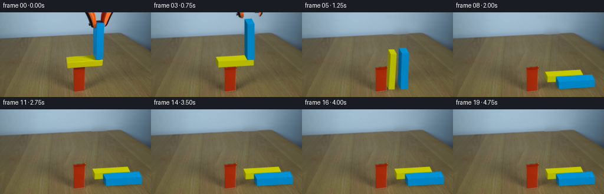
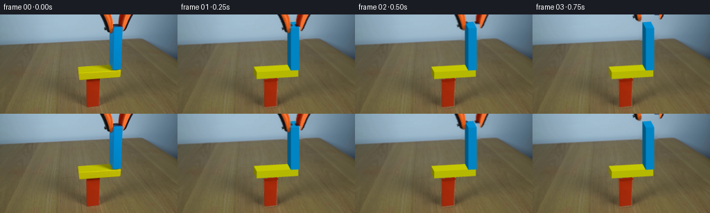
展开代码变化
--- 上一保存版本
+++ 本次保存版本
@@ -123,12 +123,12 @@
# and away, vertical world edges are vertical in the locked-off image.
def project(v):
v=np.asarray(v)
- return np.stack([v[...,0]-.28*v[...,2],133.9-v[...,1]-.52*v[...,2]-.059*(v[...,0]-134)],-1)
+ return np.stack([v[...,0]+.28*v[...,2]-2.2,128.4-v[...,1]+.52*v[...,2]-.059*(v[...,0]-134)],-1)
faces=[([0,1,2,3],(0,0,1)),([4,7,6,5],(0,0,-1)),
([0,4,5,1],(0,-1,0)),([3,2,6,7],(0,1,0)),
([0,3,7,4],(-1,0,0)),([1,5,6,2],(1,0,0))]
-L=np.array([-.45,.85,.65]);L/=np.linalg.norm(L)
+L=np.array([-.12,.83,.68]);L/=np.linalg.norm(L)
VIEW=np.array([-.28,.48,1.]);VIEW/=np.linalg.norm(VIEW)
rng=np.random.default_rng(18)
noise=cv2.GaussianBlur(rng.normal(0,1,(H*S,W*S)).astype(np.float32),(0,0),.7)
@@ -145,7 +145,7 @@
if n@VIEW<=.001:continue
mask=np.zeros((H*S,W*S),np.uint8)
cv2.fillPoly(mask,[np.rint(poly[indices]).astype(np.int32)],255)
- shade=.62+.38*max(0,n@L)
+ shade=.48+.52*max(0,n@L)
color=np.asarray(base)*shade
# Broad lighting plus a tiny fixed wood-surface variation.
yy,xx=np.where(mask)
@@ -209,9 +209,10 @@
rr=cv2.resize(red_rgb,(W*S,H*S),interpolation=cv2.INTER_CUBIC)
canvas=canvas*(1-aa[:,:,None])+rr
# Yellow is behind the blue when their projected silhouettes overlap.
- cuboid(canvas,*state[0],(60,10,15),(196,196,1))
- cuboid(canvas,*state[1],(12,61,17),(0,142,203))
+ cuboid(canvas,*state[0],(60,10,15),(225,228,1))
+ cuboid(canvas,*state[1],(12,61,17),(0,164,242))
tool_overlay(canvas,layers,t)
+ canvas=cv2.GaussianBlur(canvas,(0,0),.95)
return cv2.resize(np.uint8(np.clip(canvas,0,255)),(W,H),interpolation=cv2.INTER_AREA)
def main():
候选 03播放与检查图
点击播放 · 原生 RGB 像素
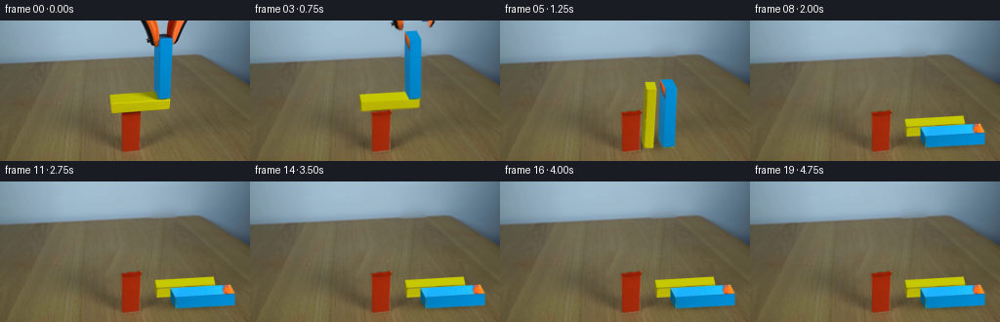
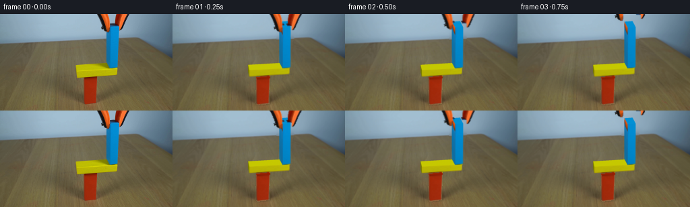
展开代码变化
--- 上一保存版本
+++ 本次保存版本
@@ -133,6 +133,22 @@
rng=np.random.default_rng(18)
noise=cv2.GaussianBlur(rng.normal(0,1,(H*S,W*S)).astype(np.float32),(0,0),.7)
+TEXTURES={}
+
+def prepare_textures(im):
+ defs={
+ ("yellow",0): [[114.1,95],[173.5,91],[174,81.2],[113.6,85.3]],
+ ("blue",0): [[163,80.7],[174,79.8],[176,18],[163,18]],
+ ("blue",4): [[158,70],[158,17],[163,18],[163,80.7]],
+ }
+ dst=np.array([[0,127],[127,127],[127,0],[0,0]],np.float32)
+ for key,pts in defs.items():
+ mat=cv2.getPerspectiveTransform(np.array(pts,np.float32),dst)
+ tex=cv2.warpPerspective(im.astype(float),mat,(128,128),flags=cv2.INTER_LINEAR)
+ if key[0]=="blue":
+ tex[:24]=tex[25:26]
+ TEXTURES[key]=tex
+
def cuboid(canvas,pos,angle,size,base):
w,h,d=size;c,s=math.cos(angle),math.sin(angle)
local=np.array([[-w/2,-h/2,d/2],[w/2,-h/2,d/2],[w/2,h/2,d/2],[-w/2,h/2,d/2],
@@ -140,7 +156,10 @@
rot=np.array([[c,-s,0],[s,c,0],[0,0,1]])
verts=local@rot.T+np.array([*pos,0])
poly=project(verts)*S
- for indices,normal in faces:
+ kind="yellow" if w==60 else "blue"
+ if kind=="yellow":
+ poly[:,0]+=(.12-.28)*verts[:,2]*S+1.1*S
+ for face_id,(indices,normal) in enumerate(faces):
n=rot@np.array(normal)
if n@VIEW<=.001:continue
mask=np.zeros((H*S,W*S),np.uint8)
@@ -152,6 +171,15 @@
if len(xx):
surface=color[None,:]+noise[yy,xx,None]*.62
surface+=((xx/(W*S)-.5)*.6)[:,None]
+ if (kind,face_id) in TEXTURES:
+ origshade=.48+.52*max(0,np.array(normal)@L)
+ dst=poly[indices].astype(np.float32)
+ src=np.array([[0,127],[127,127],[127,0],[0,0]],np.float32)
+ # Left face has a different vertex winding.
+ if face_id==4:src=np.array([[0,127],[127,127],[127,0],[0,0]],np.float32)
+ mat=cv2.getPerspectiveTransform(src,dst)
+ tex=cv2.warpPerspective(TEXTURES[(kind,face_id)],mat,(W*S,H*S),flags=cv2.INTER_LINEAR,borderMode=cv2.BORDER_REPLICATE)
+ surface=tex[yy,xx]*(shade/origshade)
canvas[yy,xx]=np.clip(surface,0,255)
return verts
@@ -227,6 +255,7 @@
cv2.fillPoly(red,[np.array([[124,95],[124,92],[140,91],[144,93],[144,95]])],(147,31,4))
ra=cv2.GaussianBlur(alpha.astype(float)/255,(3,3),.3)
rr=red.astype(float)*ra[:,:,None]
+ prepare_textures(im)
states=dynamics();layers=make_grabber(im)
frames=[im.copy()]
for i in range(1,20):
候选 04播放与检查图
点击播放 · 原生 RGB 像素

展开代码变化
--- 上一保存版本
+++ 本次保存版本
@@ -146,7 +146,12 @@
mat=cv2.getPerspectiveTransform(np.array(pts,np.float32),dst)
tex=cv2.warpPerspective(im.astype(float),mat,(128,128),flags=cv2.INTER_LINEAR)
if key[0]=="blue":
- tex[:24]=tex[25:26]
+ if key[1]==4:
+ rgb=im[40:68,158:162].mean(axis=(0,1))
+ tex[:]=rgb
+ tex+=np.linspace(-1,1,128)[None,:,None]
+ else:
+ tex[:24]=tex[25:26]
TEXTURES[key]=tex
def cuboid(canvas,pos,angle,size,base):
@@ -252,7 +257,7 @@
alpha=np.zeros((H,W),np.uint8)
cv2.fillPoly(alpha,[np.array([[124,94],[144,92],[143,133],[125,135],[123,132]])],255)
red=im.copy()
- cv2.fillPoly(red,[np.array([[124,95],[124,92],[140,91],[144,93],[144,95]])],(147,31,4))
+ cv2.fillPoly(red,[np.array([[124,95],[124,92],[140,91],[144,93],[144,95]])],(129,26,3))
ra=cv2.GaussianBlur(alpha.astype(float)/255,(3,3),.3)
rr=red.astype(float)*ra[:,:,None]
prepare_textures(im)
候选 05播放与检查图
点击播放 · 原生 RGB 像素
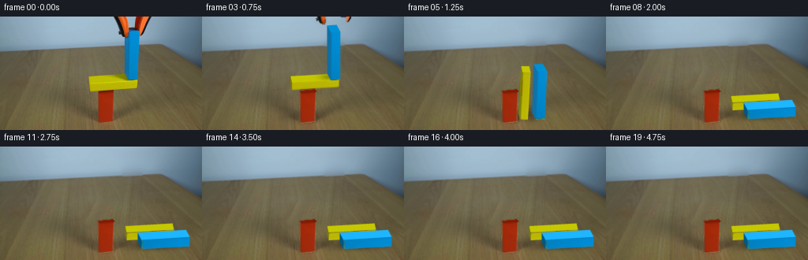
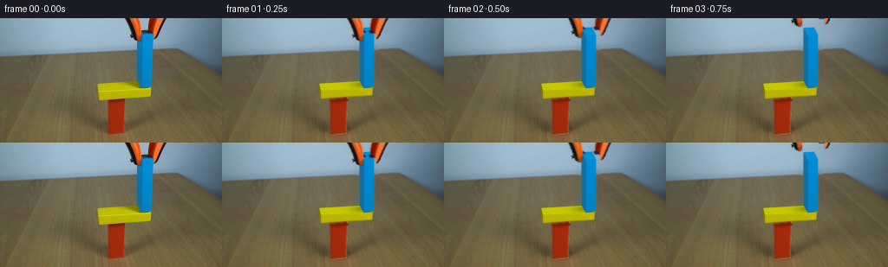
展开代码变化
--- 上一保存版本
+++ 本次保存版本
@@ -185,6 +185,11 @@
mat=cv2.getPerspectiveTransform(src,dst)
tex=cv2.warpPerspective(TEXTURES[(kind,face_id)],mat,(W*S,H*S),flags=cv2.INTER_LINEAR,borderMode=cv2.BORDER_REPLICATE)
surface=tex[yy,xx]*(shade/origshade)
+ if kind=="yellow" and face_id==3:
+ q=rot@np.array([19.,5.,0.])+np.array([*pos,0])
+ cp=project(q)*S
+ occ=np.exp(-.5*((xx-cp[0])/(8*S))**2-.5*((yy-cp[1])/(2.6*S))**2)
+ surface*=1-(.27*math.exp(-abs(angle)*4)*occ)[:,None]
canvas[yy,xx]=np.clip(surface,0,255)
return verts
可观测工具轨迹
实际执行的命令与返回图片。
命令 1exit 0
/bin/bash -lc "ls -la && cat prompt.txt && printf '\\n---RULES---\\n' && cat GENERATION_RULES.md"
命令 2exit 0
/bin/bash -lc "cat artifact_io.py && python - <<'PY'
from PIL import Image
im=Image.open('first_frame.png'); im.resize((1024,576)).save('.tmp/first_large.png')
PY"命令 3exit 0
/bin/bash -lc "python - <<'PY' import importlib.util for x in ['cv2','scipy','numpy','PIL']: print(x, bool(importlib.util.find_spec(x))) PY"
命令 4exit 0
/bin/bash -lc "python - <<'PY'
from PIL import Image
im=Image.open('first_frame.png'); im.crop((100,0,195,144)).resize((570,864),Image.Resampling.NEAREST).save('.tmp/crop.png')
PY"命令 5exit 0
/bin/bash -lc "python - <<'PY'
from PIL import Image
import numpy as np
im=np.array(Image.open('first_frame.png'))
for y in [14,16,18,20,22,24,26,40,60,70,72,74,76,78,80,82,84,86,88,90,92,94,96,130,132,134]:
a=im[y]; blue=(a[:,2]>a[:,0]*1.6)&(a[:,1]>a[:,0]*1.8)&(a[:,0]<60); yell=(a[:,0]>110)&(a[:,1]>100)&(a[:,2]<60); red=(a[:,0]>120)&(a[:,1]<80)&(a[:,2]<50)
coords=[]
for mask in [blue,yell,red]:
ix=np.where(mask)[0];coords.append([int(ix.min()),int(ix.max())] if len(ix) else [])
print(y,coords)
PY"命令 6exit 0
/bin/bash -lc "cat > .tmp/test_sim.py <<'PY'
import numpy as np, math
class Body:
def __init__(self,x,y,w,h,m,static=False):
self.p=np.array([x,y],float);self.v=np.zeros(2);self.a=0.;self.av=0.;self.w=w;self.h=h;self.inv=0 if static else 1/m;self.ii=0 if static else 12/(m*(w*w+h*h))
def verts(self):
c,s=math.cos(self.a),math.sin(self.a);return np.array([[-self.w/2,-self.h/2],[self.w/2,-self.h/2],[self.w/2,self.h/2],[-self.w/2,self.h/2]])@np.array([[c,s],[-s,c]])+self.p
def cross(a,b):return a[0]*b[1]-a[1]*b[0]
def clip(poly,n,d):
out=[]
if not len(poly):return np.array(out)
for k,q in enumerate(poly):
p=poly[k-1];dp=p@n-d;dq=q@n-d
if (dp<=0)"'!=(dq<=0):out.append(p+(q-p)*dp/(dp-dq))
if dq<=0:out.append(q)
return np.array(out)
def contact(a,b):
va,vb=a.verts(),b.verts();best=1e9;norm=None
for poly in [va,vb]:
for i in range(2):
edge=poly[(i+1)%4]-poly[i];n=np.array([-edge[1],edge[0]]);n/=np.linalg.norm(n)
pa,pb=va@n,vb@n;overlap=min(pa.max(),pb.max())-max(pa.min(),pb.min())
if overlap<-.02:return None
if overlap<best:best=overlap;norm=n
if (b.p-a.p)@norm<0:norm=-norm
inter=va
for i in range(4):
edge=vb[(i+1)%4]-vb[i];n=np.array([edge[1],-edge[0]]);inter=clip(inter,n,vb[i]@n+.025)
if not len(inter):return None
tang=np.array([-norm[1],norm[0]]);inds=np.argsort(inter@tang);pts=[inter[inds[0]],inter[inds[-1]]]
if np.linalg.norm(pts[0]-pts[1])<1:pts=pts[:1]
return norm,max(best,0),pts
def run():
red=Body(134,20,18,40,8,True); yellow=Body(144,45,60,10,3);blue=Body(169,80.5,12,61,3.66);floor=Body(134,-50,1000,100,1,True)
bodies=[yellow,blue];pairs=[(yellow,red),(blue,red),(yellow,floor),(blue,floor),(yellow,blue)]
dt=.001;states=[]
for i in range(4251):
for a in bodies:a.v[1]-=650*dt;a.p+=a.v*dt;a.a+=a.av*dt
contacts=[]
for a,b in pairs:
co=contact(a,b)
if co:contacts.append((a,b,*co))
for it in range(10):
for a,b,n,pen,pts in contacts:
for p in pts:
ra=p-a.p;rb=p-b.p
vel=lambda o,r:o.v+o.av*np.array([-r[1],r[0]])
vrel=vel(b,rb)-vel(a,ra);vn=vrel@n
den=a.inv+b.inv+cross(ra,n)**2*a.ii+cross(rb,n)**2*b.ii
if vn<0:
j=-(1.04 if vn<-20 and it==0 else 1)*vn/den
impulse=j*n
a.v-=impulse*a.inv;b.v+=impulse*b.inv;a.av-=cross(ra,impulse)*a.ii;b.av+=cross(rb,impulse)*b.ii
tan=np.array([-n[1],n[0]]);vrel=vel(b,rb)-vel(a,ra)
dent=a.inv+b.inv+cross(ra,tan)**2*a.ii+cross(rb,tan)**2*b.ii
jt=np.clip(-(vrel@tan)/dent,-.55*j,.55*j);impulse=jt*tan
a.v-=impulse*a.inv;b.v+=impulse*b.inv;a.av-=cross(ra,impulse)*a.ii;b.av+=cross(rb,impulse)*b.ii
for a,b,n,pen,pts in contacts:
correction=max(0,pen-.015)*.65/(a.inv+b.inv)*n
a.p-=correction*a.inv;b.p+=correction*b.inv
for a in bodies:
a.v*=.99994;a.av*=.9999
if i%250==0:
states.append([(b.p.copy(),b.a) for b in bodies]);print(i/1000,[(np.round(b.p,1).tolist(),round(b.a*180/math.pi,1),np.round(b.v,1).tolist()) for b in bodies])
return states
if __name__=='"'__main__':run()
PY
python .tmp/test_sim.py"命令 7exit 0
/bin/bash -lc "cp .tmp/test_sim.py .tmp/test_dynamic.py && python - <<'PY'
p='.tmp/test_dynamic.py'
s=open(p).read().replace('Body(134,20,18,40,8,True)','Body(134,20,18,40,2.4)').replace('bodies=[yellow,blue]','bodies=[yellow,blue,red]').replace('(yellow,blue)]','(yellow,blue),(red,floor)]')
open(p,'w').write(s)
PY
python .tmp/test_dynamic.py"命令 8exit 0
/bin/bash -lc "cat > .tmp/bgtest.py <<'PY'
import numpy as np,cv2
from PIL import Image,ImageDraw
im=np.array(Image.open('first_frame.png'));H,W=im.shape[:2];Y,X=np.mgrid[:H,:W]
obj=np.zeros((H,W),np.uint8)
cv2.fillPoly(obj,[np.array([[141,0],[194,0],[181,29],[177,82],[174,93],[112,96],[109,73],[155,70],[155,27]])],255)
# Copy wood from right near the small removed setup, keeping background texture.
patch=im.copy()
for y in range(36,144):
for x in range(107,180):
patch[y,x]=im[y,min(x+74,255)]
# reconstruct smooth unoccluded wall by a polynomial fit
wall=(Y < 38-.028*(X-100)) & (X>75)&(X<228)&(obj==0)
x=(X-160)/100;y=(Y-20)/60
terms=[np.ones_like(x),x,y,x*x,x*y,y*y,x**3,x*x*y,x*y*y,y**3]
D=np.stack(terms,-1);fit=np.zeros_like(im,dtype=float)
for c in range(3):
coef=np.linalg.lstsq(D[wall],im[:,:,c][wall],rcond=None)[0];fit[:,:,c]=D@coef
for y in range(45):
for x in range(110,197):
if y<39-.025*(x-110):patch[y,x]=np.clip(fit[y,x],0,255)
# fill with patch then Poisson seamlessly composite, excluding red
obj[94:,:124]=0;obj[94:,124:145]=0
mask=cv2.dilate(obj,np.ones((3,3),np.uint8))
mask[95:,124:145]=0
bg=cv2.seamlessClone(patch,im,mask,(152,48),cv2.NORMAL_CLONE)
# seamlessClone center placement actually rect bounding center
ys,xs=np.where(mask);center=((xs.min()+xs.max())//2,(ys.min()+ys.max())//2)
bg=cv2.seamlessClone(patch,im,mask,center,cv2.NORMAL_CLONE)
Image.fromarray(bg).save('.tmp/bg.png')
PY
python .tmp/bgtest.py"命令 9exit 0
/bin/bash -lc "python - <<'PY'
s=open('.tmp/bgtest.py').read();s=s[:s.index('# fill with patch')]+'''# blend wide repair region, keeping the upright red support
mask=cv2.dilate(obj,np.ones((7,7),np.uint8))
mask[94:,:]=0
mask[93,125:145]=0
# use direct clean patch, not Poisson (which preserves occluder's colors)
alpha=cv2.GaussianBlur(mask.astype(float)/255,(3,3),.6)
alpha[mask==255]=1
bg=(im*(1-alpha[:,:,None])+patch*alpha[:,:,None]).clip(0,255).astype(np.uint8)
Image.fromarray(bg).save('.tmp/bg.png')
''';open('.tmp/bgtest.py','w').write(s)
PY
python .tmp/bgtest.py"命令 10exit 0
/bin/bash -lc "python - <<'PY'
from PIL import Image
Image.open('first_frame.png').crop((104,65,183,101)).resize((948,432),Image.Resampling.NEAREST).save('.tmp/yellow.png')
PY"命令 11exit 0
/bin/bash -lc "cat > .tmp/poisson_bg.py <<'PY'
import numpy as np,cv2
from PIL import Image
from scipy.sparse import lil_matrix
from scipy.sparse.linalg import spsolve
im=np.array(Image.open('first_frame.png'));H,W=im.shape[:2];Y,X=np.mgrid[:H,:W]
mask=np.zeros((H,W),np.uint8)
polys=[[[141,0],[195,0],[182,29],[157,30],[145,8]],[[156,13],[179,13],[177,84],[156,84]],[[111,74],[171,71],[178,79],[176,93],[114,96],[110,90]]]
for p in polys:cv2.fillPoly(mask,[np.array(p)],255)
mask=cv2.dilate(mask,np.ones((3,3),np.uint8));mask[94:,124:145]=0
src=im.astype(float).copy()
# wall interpolated from source, smooth polynomial trained on wall surroundings
x=(X-160)/100;y=(Y-20)/60
D=np.stack([np.ones_like(x),x,y,x*x,x*y,y*y,x**3,x*x*y,x*y*y,y**3],-1)
wall=(Y < 42-.031*X)&(X>70)&(X<229)&(mask==0)
fit=np.empty_like(src)
for c in range(3):fit[:,:,c]=D@np.linalg.lstsq(D[wall],im[:,:,c][wall],rcond=None)[0]
# rightward offset on tabletop, luminance aligned to left/right neighborhood
for yy in range(H):
for xx in range(W):
if mask[yy,xx]:
horiz=43.8-.038*xx
if yy<horiz-1:src[yy,xx]=fit[yy,xx]
else:
# sample corresponding table depth accounting for projection
sx=min(W-1,xx+59);sy=np.clip(int(round(yy-2.1)),0,H-1)
src[yy,xx]=im[sy,sx]
# Poisson boundary match source gradient to unchanged neighbors
ys,xs=np.where(mask>0);N=len(xs);inds=np.full((H,W),-1,int);inds[ys,xs]=np.arange(N)
A=lil_matrix((N,N));rhs=np.zeros((N,3))
for i,(yy,xx) in enumerate(zip(ys,xs)):
deg=0
for dx,dy in [(1,0),(-1,0),(0,1),(0,-1)]:
nx,ny=xx+dx,yy+dy
if not(0<=nx<W and 0<=ny<H):continue
deg+=1
# src at boundary must also be background, not original occluder
if not mask[ny,nx]:
rhs[i]+=im[ny,nx]
else:A[i,inds[ny,nx]]=-1
rhs[i]+=src[yy,xx]-src[ny,nx]
A[i,i]=deg
bg=im.astype(float);bg[ys,xs]=spsolve(A.tocsr(),rhs)
Image.fromarray(np.uint8(np.clip(bg,0,255))).save('.tmp/bg2.png')
PY
python .tmp/poisson_bg.py"命令 12exit 0
/bin/bash -lc "python - <<'PY'
p='.tmp/poisson_bg.py';s=open(p).read().replace('np.ones((3,3)','np.ones((5,5)').replace('if mask[yy,xx]:','if True:').replace(\"Image.fromarray(np.uint8(np.clip(bg,0,255))).save('.tmp/bg2.png')\",\"Image.fromarray(np.uint8(np.clip(bg,0,255))).save('.tmp/bg2.png')\")
open(p,'w').write(s)
PY
python .tmp/poisson_bg.py"命令 13exit 0
/bin/bash -lc "python - <<'PY'
p='.tmp/poisson_bg.py';s=open(p).read().replace('[[111,74],[171,71],[178,79],[176,93],[114,96],[110,90]]','[[109,71],[171,68],[179,78],[177,95],[110,98],[106,88]]').replace('src[yy,xx]=im[sy,sx]','src[yy,xx]=im[sy,sx]')
# widen below red top only for background and exclude actual red, shadow
s=s.replace('mask[94:,124:145]=0','mask[93:,123:145]=0')
open(p,'w').write(s)
PY
python .tmp/poisson_bg.py"命令 14exit 0
/bin/bash -lc "python - <<'PY'
s=open('.tmp/poisson_bg.py').read();s=s.replace('src[yy,xx]=im[sy,sx]','src[yy,xx]=im[sy,sx]')
s=s.replace(\"# Poisson boundary match\", \"Image.fromarray(np.uint8(src.clip(0,255))).save('.tmp/src.png')\\nImage.fromarray(mask).save('.tmp/mask.png')\\n# Poisson boundary match\")
open('.tmp/poisson_bg.py','w').write(s)
PY
python .tmp/poisson_bg.py"命令 15exit 0
/bin/bash -lc "python - <<'PY'
p='.tmp/poisson_bg.py';s=open(p).read().replace('sx=min(W-1,xx+59);sy=np.clip(int(round(yy-2.1)),0,H-1)','sx=min(W-1,xx+84);sy=np.clip(max(52,int(round(yy-3.2))),0,H-1)')
open(p,'w').write(s)
PY
python .tmp/poisson_bg.py"命令 16exit 0
/bin/bash -lc "python - <<'PY'
p='.tmp/poisson_bg.py';s=open(p).read().replace('max(52,int(round(yy-3.2)))','int(round(yy-3.2))').replace(\"mask[93:,123:145]=0\",\"mask[93:,123:145]=0\\nmask[91:95,121:147]=255\\nmask[95:,123:145]=0\")
open(p,'w').write(s)
PY
python .tmp/poisson_bg.py"命令 17exit 0
/bin/bash -lc "python - <<'PY'
p='.tmp/poisson_bg.py';s=open(p).read().replace('sx=min(W-1,xx+84);sy=np.clip(int(round(yy-3.2)),0,H-1)','sx=max(0,xx-80);sy=np.clip(int(round(yy+3.1)),0,H-1)')
open(p,'w').write(s)
PY
python .tmp/poisson_bg.py"命令 18exit 0
/bin/bash -lc "python - <<'PY'
p='.tmp/poisson_bg.py';s=open(p).read();s=s.replace('mask[93:,123:145]=0\\nmask[91:95,121:147]=255\\nmask[95:,123:145]=0','cv2.fillPoly(mask,[np.array([[121,91],[146,90],[146,135],[123,138],[120,134]])],255)')
open(p,'w').write(s)
PY
python .tmp/poisson_bg.py"命令 19exit 0
/bin/bash -lc "cat > generate.py <<'PY'
\"\"\"Image-grounded, analytic RGB continuation of the balance demonstration.\"\"\"
from pathlib import Path
import math
import numpy as np
import cv2
from PIL import Image
from scipy.sparse import lil_matrix
from scipy.sparse.linalg import spsolve
import artifact_io
ROOT=Path(__file__).resolve().parent
W,H=256,144
S=4
def clean_background(im):
Y,X=np.mgrid[:H,:W]
mask=np.zeros((H,W),np.uint8)
polys=[[[141,0],[195,0],[182,29],[157,30],[145,8]],
[[156,13],[179,13],[177,84],[156,84]],
[[109,71],[171,68],[179,78],[177,95],[110,98],[106,88]]]
for p in polys: cv2.fillPoly(mask,[np.array(p)],255)
mask=cv2.dilate(mask,np.ones((5,5),np.uint8))
cv2.fillPoly(mask,[np.array([[121,91],[146,90],[146,135],[123,138],[120,134]])],255)
x=(X-160)/100.;y=(Y-20)/60.
D=np.stack([np.ones_like(x),x,y,x*x,x*y,y*y,x**3,x*x*y,x*y*y,y**3],-1)
wall=(Y < 42-.031*X)&(X>70)&(X<229)&(mask==0)
fit=np.empty(im.shape,float)
for c in range(3):fit[:,:,c]=D@np.linalg.lstsq(D[wall],im[:,:,c][wall],rcond=None)[0]
sx=np.maximum(0,X-80);sy=np.clip(np.rint(Y+3.1).astype(int),0,H-1)
src=im[sy,sx].astype(float)
src[Y < 43.8-.038*X-1]=fit[Y < 43.8-.038*X-1]
ys,xs=np.where(mask);n=len(xs);inds=np.full((H,W),-1,int);inds[ys,xs]=np.arange(n)
A=lil_matrix((n,n));rhs=np.zeros((n,3))
for i,(yy,xx) in enumerate(zip(ys,xs)):
degree=0
for dx,dy in [(1,0),(-1,0),(0,1),(0,-1)]:
nx,ny=xx+dx,yy+dy
if not(0<=nx<W and 0<=ny<H):continue
degree+=1
if mask[ny,nx]:A[i,inds[ny,nx]]=-1
else:rhs[i]+=im[ny,nx]
rhs[i]+=src[yy,xx]-src[ny,nx]
A[i,i]=degree
bg=im.astype(float);bg[ys,xs]=spsolve(A.tocsr(),rhs)
return np.uint8(np.clip(bg,0,255))
# Small impulse-based planar rigid-body solver, using explicit convex polygons.
class Body:
def __init__(self,x,y,w,h,m,static=False):
self.p=np.array([x,y],float);self.v=np.zeros(2);self.a=0.;self.av=0.
self.w=w;self.h=h;self.inv=0 if static else 1/m
self.ii=0 if static else 12/(m*(w*w+h*h))
def verts(self):
c,s=math.cos(self.a),math.sin(self.a)
return np.array([[-self.w/2,-self.h/2],[self.w/2,-self.h/2],[self.w/2,self.h/2],[-self.w/2,self.h/2]])@np.array([[c,s],[-s,c]])+self.p
def cross(a,b):return a[0]*b[1]-a[1]*b[0]
def clip(poly,n,d):
out=[]
for k,q in enumerate(poly):
p=poly[k-1];dp=p@n-d;dq=q@n-d
if (dp<=0)"'!=(dq<=0):out.append(p+(q-p)*dp/(dp-dq))
if dq<=0:out.append(q)
return np.array(out)
def contact(a,b):
va,vb=a.verts(),b.verts();best=1e9;normal=None
for poly in [va,vb]:
for i in range(2):
edge=poly[(i+1)%4]-poly[i];n=np.array([-edge[1],edge[0]]);n/=np.linalg.norm(n)
pa,pb=va@n,vb@n;overlap=min(pa.max(),pb.max())-max(pa.min(),pb.min())
if overlap<-.02:return None
if overlap<best:best=overlap;normal=n
if (b.p-a.p)@normal<0:normal=-normal
inter=va
for i in range(4):
edge=vb[(i+1)%4]-vb[i];n=np.array([edge[1],-edge[0]])
inter=clip(inter,n,vb[i]@n+.025)
if not len(inter):return None
tang=np.array([-normal[1],normal[0]]);inds=np.argsort(inter@tang)
pts=[inter[inds[0]],inter[inds[-1]]]
if np.linalg.norm(pts[0]-pts[1])<1:pts=pts[:1]
return normal,max(best,0),pts
def dynamics():
red=Body(134,20,18,40,8,True)
yellow=Body(144,45,60,10,3)
blue=Body(169,80.5,12,61,3.66)
floor=Body(134,-50,1000,100,1,True)
bodies=[yellow,blue]
pairs=[(yellow,red),(blue,red),(yellow,floor),(blue,floor),(yellow,blue)]
dt=.001;states=[]
for i in range(3501):
states.append([(b.p.copy(),float(b.a)) for b in bodies])
for b in bodies:b.v[1]-=650*dt;b.p+=b.v*dt;b.a+=b.av*dt
contacts=[]
for a,b in pairs:
co=contact(a,b)
if co:contacts.append((a,b,*co))
for it in range(10):
for a,b,n,pen,pts in contacts:
for p in pts:
ra=p-a.p;rb=p-b.p
vel=lambda o,r:o.v+o.av*np.array([-r[1],r[0]])
vrel=vel(b,rb)-vel(a,ra);vn=vrel@n
den=a.inv+b.inv+cross(ra,n)**2*a.ii+cross(rb,n)**2*b.ii
if vn<0:
j=-(1.04 if vn<-20 and it==0 else 1)*vn/den
impulse=j*n
a.v-=impulse*a.inv;b.v+=impulse*b.inv
a.av-=cross(ra,impulse)*a.ii;b.av+=cross(rb,impulse)*b.ii
tan=np.array([-n[1],n[0]]);vrel=vel(b,rb)-vel(a,ra)
dent=a.inv+b.inv+cross(ra,tan)**2*a.ii+cross(rb,tan)**2*b.ii
jt=np.clip(-(vrel@tan)/dent,-.55*j,.55*j);impulse=jt*tan
a.v-=impulse*a.inv;b.v+=impulse*b.inv
a.av-=cross(ra,impulse)*a.ii;b.av+=cross(rb,impulse)*b.ii
for a,b,n,pen,pts in contacts:
corr=max(0,pen-.015)*.65/(a.inv+b.inv)*n
a.p-=corr*a.inv;b.p+=corr*b.inv
for b in bodies:b.v*=.99994;b.av*=.9999
return states
# View projection recovered from the three visible blocks. Depth edges lean left
# and away, vertical world edges are vertical in the locked-off image.
def project(v):
v=np.asarray(v)
return np.stack([v[...,0]-.28*v[...,2],133.9-v[...,1]-.52*v[...,2]-.059*(v[...,0]-134)],-1)
faces=[([0,1,2,3],(0,0,1)),([4,7,6,5],(0,0,-1)),
([0,4,5,1],(0,-1,0)),([3,2,6,7],(0,1,0)),
([0,3,7,4],(-1,0,0)),([1,5,6,2],(1,0,0))]
L=np.array([-.45,.85,.65]);L/=np.linalg.norm(L)
VIEW=np.array([-.28,.48,1.]);VIEW/=np.linalg.norm(VIEW)
rng=np.random.default_rng(18)
noise=cv2.GaussianBlur(rng.normal(0,1,(H*S,W*S)).astype(np.float32),(0,0),.7)
def cuboid(canvas,pos,angle,size,base):
w,h,d=size;c,s=math.cos(angle),math.sin(angle)
local=np.array([[-w/2,-h/2,d/2],[w/2,-h/2,d/2],[w/2,h/2,d/2],[-w/2,h/2,d/2],
[-w/2,-h/2,-d/2],[w/2,-h/2,-d/2],[w/2,h/2,-d/2],[-w/2,h/2,-d/2]])
rot=np.array([[c,-s,0],[s,c,0],[0,0,1]])
verts=local@rot.T+np.array([*pos,0])
poly=project(verts)*S
for indices,normal in faces:
n=rot@np.array(normal)
if n@VIEW<=.001:continue
mask=np.zeros((H*S,W*S),np.uint8)
cv2.fillPoly(mask,[np.rint(poly[indices]).astype(np.int32)],255)
shade=.62+.38*max(0,n@L)
color=np.asarray(base)*shade
# Broad lighting plus a tiny fixed wood-surface variation.
yy,xx=np.where(mask)
if len(xx):
surface=color[None,:]+noise[yy,xx,None]*.62
surface+=((xx/(W*S)-.5)*.6)[:,None]
canvas[yy,xx]=np.clip(surface,0,255)
return verts
def make_grabber(im):
a=np.zeros((H,W),np.uint8)
polys=[[[142,0],[161,0],[165,16],[163,28],[158,27],[151,25],[146,13]],
[[171,0],[194,0],[185,16],[177,25],[173,21],[169,15]]]
for p in polys:cv2.fillPoly(a,[np.array(p)],255)
yy,xx=np.mgrid[:H,:W]
orange=(im[:,:,0]>im[:,:,1]*1.2)&(im[:,:,0]>80)&(yy<28)
dark=(im.mean(2)<78)&(yy<28)
a=((a>0)&(orange|dark)).astype(np.uint8)*255
a=cv2.GaussianBlur(a,(3,3),.35)
split=167
layers=[]
for side in [0,1]:
alpha=a.copy();alpha[:,split:] = 0 if side==0 else alpha[:,split:]
if side==1:alpha[:,:split]=0
layers.append((im.astype(float),alpha.astype(float)/255))
return layers
def tool_overlay(canvas,layers,t):
# Gentle disengagement, then lift out of the upper edge.
u=np.clip((t-.20)/.55,0,1);ease=u*u*(3-2*u)
lift=64*max(0,t-.35)**1.45
opening=6*ease
for side,(rgb,alpha) in enumerate(layers):
dx=(-1 if side==0 else 1)*opening
M=np.array([[1,0,dx],[0,1,-lift]],np.float32)
# Premultiplied layers avoid dirty outlines where jaws uncover the wall.
aa=cv2.warpAffine(alpha,M,(W,H),flags=cv2.INTER_LINEAR)
cc=cv2.warpAffine(rgb*alpha[:,:,None],M,(W,H),flags=cv2.INTER_LINEAR)
aa=cv2.resize(aa,(W*S,H*S),interpolation=cv2.INTER_CUBIC).clip(0,1)
cc=cv2.resize(cc,(W*S,H*S),interpolation=cv2.INTER_CUBIC)
canvas[:]=canvas*(1-aa[:,:,None])+cc
def render(bg,red_rgb,red_alpha,states,layers,t):
rt=max(0,t-.75)
state=states[min(len(states)-1,int(round(rt*1000)))]
canvas=cv2.resize(bg.astype(float),(W*S,H*S),interpolation=cv2.INTER_CUBIC)
# Soft contact shadows move with the fall rather than remaining on the wall.
shadow=np.zeros((H*S,W*S),np.float32)
for (p,a),(w,h,d) in zip(state,[(60,10,15),(12,61,17)]):
c,s=math.cos(a),math.sin(a)
vx=np.array([[-w/2,-h/2],[w/2,-h/2],[w/2,h/2],[-w/2,h/2]])@np.array([[c,s],[-s,c]])+p
spread=(np.ptp(vx[:,0])+d*.32)/2
center=project([p[0]-p[1]*.34,0,0])
strength=.10+.18*math.exp(-max(0,np.min(vx[:,1]))/20)
temp=np.zeros_like(shadow)
cv2.ellipse(temp,tuple(np.rint(center*S).astype(int)),(int(spread*S),int(5*S)),0,0,360,strength,-1)
shadow+=cv2.GaussianBlur(temp,(0,0),2.7*S)
canvas*=1-shadow[:,:,None]
# Original red column and its small bevel retain the exact source texture.
aa=cv2.resize(red_alpha,(W*S,H*S),interpolation=cv2.INTER_LINEAR)
rr=cv2.resize(red_rgb,(W*S,H*S),interpolation=cv2.INTER_CUBIC)
canvas=canvas*(1-aa[:,:,None])+rr
# Yellow is behind the blue when their projected silhouettes overlap.
cuboid(canvas,*state[0],(60,10,15),(196,196,1))
cuboid(canvas,*state[1],(12,61,17),(0,142,203))
tool_overlay(canvas,layers,t)
return cv2.resize(np.uint8(np.clip(canvas,0,255)),(W,H),interpolation=cv2.INTER_AREA)
def main():
im=np.array(Image.open(ROOT/'"'first_frame.png').convert('RGB'))
bg=clean_background(im)
(ROOT/'.tmp').mkdir(exist_ok=True)
Image.fromarray(bg).save(ROOT/'.tmp/background.png')
# Red faces as photographed, with the missing upper surface restored.
alpha=np.zeros((H,W),np.uint8)
cv2.fillPoly(alpha,[np.array([[124,94],[144,92],[143,133],[125,135],[123,132]])],255)
red=im.copy()
cv2.fillPoly(red,[np.array([[124,95],[124,92],[140,91],[144,93],[144,95]])],(147,31,4))
ra=cv2.GaussianBlur(alpha.astype(float)/255,(3,3),.3)
rr=red.astype(float)*ra[:,:,None]
states=dynamics();layers=make_grabber(im)
frames=[im.copy()]
for i in range(1,20):
frames.append(render(bg,rr,ra,states,layers,i/4))
frames=np.stack(frames).astype(np.uint8)
artifact_io.save(frames,ROOT)
if __name__=='__main__':main()
PY
python generate.py"命令 20exit 0
/bin/bash -lc "python - <<'PY'
p='generate.py';s=open(p).read();s=s.replace(\"v[...,0]-.28*v[...,2],133.9-v[...,1]-.52*v[...,2]-.059*(v[...,0]-134)\",\"v[...,0]+.28*v[...,2]-2.2,128.4-v[...,1]+.52*v[...,2]-.059*(v[...,0]-134)\")
s=s.replace('L=np.array([-.45,.85,.65])','L=np.array([-.12,.83,.68])').replace('shade=.62+.38*max(0,n@L)','shade=.48+.52*max(0,n@L)')
s=s.replace('(196,196,1)','(225,228,1)').replace('(0,142,203)','(0,164,242)')
s=s.replace('return cv2.resize(np.uint8(np.clip(canvas,0,255)),(W,H),interpolation=cv2.INTER_AREA)','canvas=cv2.GaussianBlur(canvas,(0,0),.95)\\n return cv2.resize(np.uint8(np.clip(canvas,0,255)),(W,H),interpolation=cv2.INTER_AREA)')
open(p,'w').write(s)
PY
python generate.py"命令 21exit 0
/bin/bash -lc "python - <<'PY'
p='generate.py';s=open(p).read();s=s.replace('def cuboid(canvas,pos,angle,size,base):','TEXTURES={}\\n\\ndef prepare_textures(im):\\n defs={\\n (\"yellow\",0): [[114.1,95],[173.5,91],[174,81.2],[113.6,85.3]],\\n (\"blue\",0): [[163,80.7],[174,79.8],[176,18],[163,18]],\\n (\"blue\",4): [[158,70],[158,17],[163,18],[163,80.7]],\\n }\\n dst=np.array([[0,127],[127,127],[127,0],[0,0]],np.float32)\\n for key,pts in defs.items():\\n mat=cv2.getPerspectiveTransform(np.array(pts,np.float32),dst)\\n tex=cv2.warpPerspective(im.astype(float),mat,(128,128),flags=cv2.INTER_LINEAR)\\n if key[0]==\"blue\":\\n tex[:24]=tex[25:26]\\n TEXTURES[key]=tex\\n\\ndef cuboid(canvas,pos,angle,size,base):')
s=s.replace('poly=project(verts)*S\\n for indices,normal in faces:', 'poly=project(verts)*S\\n kind=\"yellow\" if w==60 else \"blue\"\\n if kind==\"yellow\":\\n poly[:,0]+=(.12-.28)*verts[:,2]*S+1.1*S\\n for face_id,(indices,normal) in enumerate(faces):')
s=s.replace('canvas[yy,xx]=np.clip(surface,0,255)','''if (kind,face_id) in TEXTURES:
origshade=.48+.52*max(0,np.array(normal)@L)
dst=poly[indices].astype(np.float32)
src=np.array([[0,127],[127,127],[127,0],[0,0]],np.float32)
# Left face has a different vertex winding.
if face_id==4:src=np.array([[0,127],[127,127],[127,0],[0,0]],np.float32)
mat=cv2.getPerspectiveTransform(src,dst)
tex=cv2.warpPerspective(TEXTURES[(kind,face_id)],mat,(W*S,H*S),flags=cv2.INTER_LINEAR,borderMode=cv2.BORDER_REPLICATE)
surface=tex[yy,xx]*(shade/origshade)
canvas[yy,xx]=np.clip(surface,0,255)''')
s=s.replace('states=dynamics();layers=make_grabber(im)','prepare_textures(im)\\n states=dynamics();layers=make_grabber(im)')
open(p,'w').write(s)
PY
python generate.py"命令 22exit 0
/bin/bash -lc "python - <<'PY'
p='generate.py';s=open(p).read();s=s.replace('(\"blue\",4): [[158,70],[158,17],[163,18],[163,80.7]],','(\"blue\",4): [[158,70],[158,17],[163,18],[163,80.7]],')
s=s.replace('tex[:24]=tex[25:26]','''if key[1]==4:
rgb=im[40:68,158:162].mean(axis=(0,1))
tex[:]=rgb
tex+=np.linspace(-1,1,128)[None,:,None]
else:
tex[:24]=tex[25:26]''')
# original red top not bright narrow rim
s=s.replace('(147,31,4)','(129,26,3)')
open(p,'w').write(s)
PY
python generate.py"命令 23exit 0
/bin/bash -lc "python - <<'PY'
p='generate.py';s=open(p).read();s=s.replace('canvas[yy,xx]=np.clip(surface,0,255)','''if kind==\"yellow\" and face_id==3:
q=rot@np.array([19.,5.,0.])+np.array([*pos,0])
cp=project(q)*S
occ=np.exp(-.5*((xx-cp[0])/(8*S))**2-.5*((yy-cp[1])/(2.6*S))**2)
surface*=1-(.27*math.exp(-abs(angle)*4)*occ)[:,None]
canvas[yy,xx]=np.clip(surface,0,255)''')
open(p,'w').write(s)
PY
python generate.py
python - <<'PY'
import numpy as np
from PIL import Image
f=np.load('pixels.npz')['pixels']
a=np.array(Image.open('frames/00.png'));b=np.array(Image.open('first_frame.png'))
print('tensor:',f.shape,'first frame exact:',np.array_equal(a,b),'frame files:',len(__import__('glob').glob('frames/*.png')))
PY"视觉工具实际返回图片 1
视觉工具实际返回图片 2
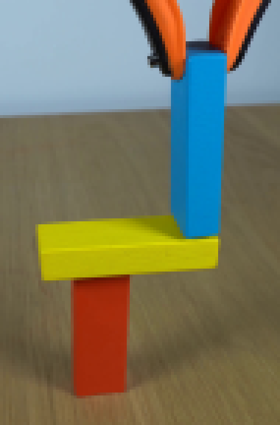
视觉工具实际返回图片 3
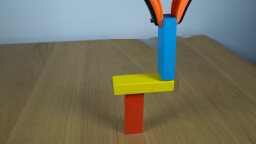
视觉工具实际返回图片 4
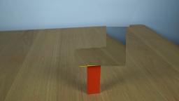
视觉工具实际返回图片 5
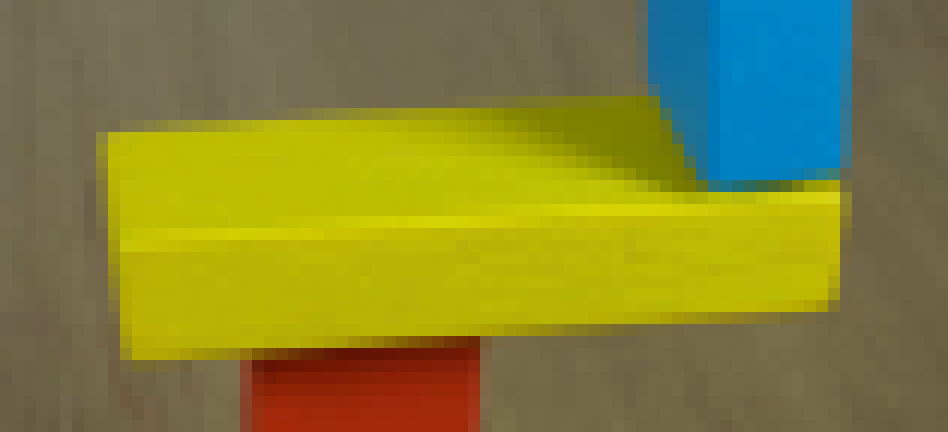
视觉工具实际返回图片 6
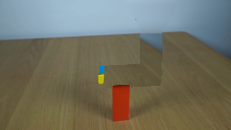
视觉工具实际返回图片 7
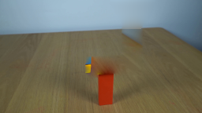
视觉工具实际返回图片 8
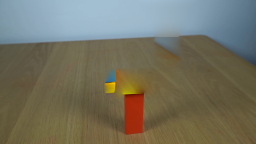
视觉工具实际返回图片 9
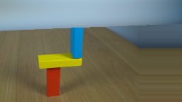
视觉工具实际返回图片 10
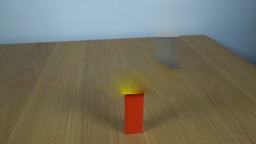
视觉工具实际返回图片 11
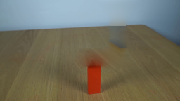
视觉工具实际返回图片 12
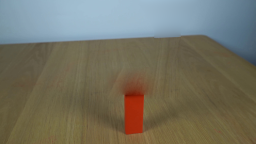
视觉工具实际返回图片 13
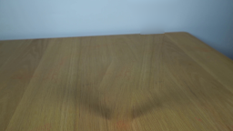
视觉工具实际返回图片 14

视觉工具实际返回图片 15

视觉工具实际返回图片 16

视觉工具实际返回图片 17

视觉工具实际返回图片 18
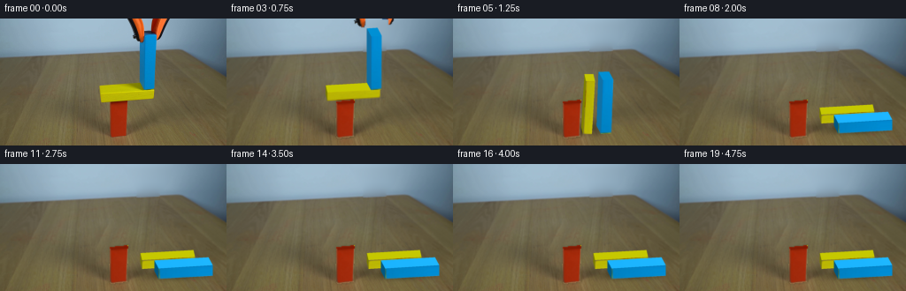
保存候选 5 份；完成命令 23 次；可验证图片返回 18 张。原始 API 响应与完整日志保留在本地。